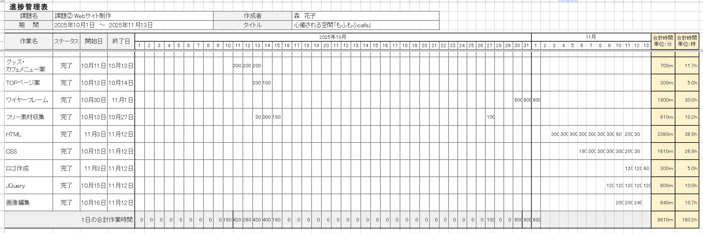

本作は、WEBデザイン・コーディング学習を開始して2作目に取り組んだ作品です 。 動物カフェ「もふもふcafe」のコーポレートサイトで、jQueryを用いたスライダーの実装などユーザーの視覚に訴える工夫をしています。 試行錯誤を重ねながら完成させた、自身の成長を実感できる一作です 。
【URL】
【担当】
企画立案（7時間）、目標時間（100時間）、ペルソナ設定（2時間）、デザインコンセプト（11.7時間）、サイトマップ（1時間）、ワイヤーフレーム（10時間）、情報設計（3時間）、デザインカンプ（20時間）、素材収集（10時間）、画像加工（11時間）、ロゴ制作（5時間）、HTML（40時間）、CSS（30時間）、jQuery（10時間）
【サイトの目的】
本サイトの最大の目的は、都会で働く人々や癒やしを求める層に対し、店舗のコンセプトである 「白い天使たちがもたらす純粋な癒やし」を視覚的に伝え、Web予約へと繋げることです。 清潔感のある店内イメージを訴求することで、顧客の不安を解消し安心して来店することを目指しています。
【ターゲット】
主なターゲットは、都心で働く30代のキャリア女性で、仕事のストレス解消として質の高い「癒やし」と「ご褒美」を求めている層です。 また、落ち着いた空間で動物を愛でたい60代の年配層もサブターゲットに設定しました。
【デザインについて】
「白い天使たち」をテーマに、白と明るく清潔感あふれるデザインを採用しました。 フォントには温かみのある「Noto Sans JP」や、ロゴ・強調部分に遊び心のある「RocknRollOne」を使用し、親しみやすさを演出しています。 メインビジュアルには動物たちの写真を大きく配置し、一目で「モフモフ感」が伝わるようなインパクトを重視しました。
【進捗管理】
HTMLに約40時間を費やし、設計と実装に重点を置きました。JQueryを用いたトップページの動的表現も組み込み、全工程の工数を分単位で管理しました。
ペルソナ設計
癒やしを求める30代女性、体験重視の大学生カップル、安らぎを願う60代主婦と、世代別の3属性を定義。SNS活用術や予約の簡便さなど、各層のITリテラシーに応じた要望を具体化し、全世代が快適に利用できる設計の根拠としました。

キャスト紹介
白を基調とした清潔感のあるカード型デザインを採用しました。毛並みの質感が伝わる高品質な画像に、名前を明記することでペルソナが求める「親しみやすさ」と「事前の安心感」を視覚的に表現しています。
カフェメニュー
動物モチーフのスイーツやラテアートなど、視覚的な可愛らしさを追求した画像を配置しました。各メニューにカード型デザインを採用し、名称を明記することで「映える写真」と「情報の分かりやすさ」を考慮しました。
SNSリンク・店舗案内
各ターゲット層が使い慣れたSNS（Instagram、X、Facebook）への導線を中央に配置。店舗情報は、詳細なアクセス経路を地図付きで掲載し、初回来店時の不安を解消する設計をしました。
【コーディングについて】
HTML5/CSS3を用いたセマンティックなマークアップを基本とし、保守性の高いコード記述を心がけました。 jQueryプラグイン「bxSlider」を導入し、トップページにフェード効果付きのスライダーを実装することで、 動物たちの多彩な表情を動的に見せています。
【困難だった点と解決策】
初めてのjQuery実装において、スライダーが意図通りに動作しない点に苦労しました。 ブラウザのデベロッパーツールを活用してスクリプトの読み込み順やパスの記述ミスを一つずつ検証しました。 この経験から、不具合発生時の論理的なデバッグ手法を学ぶとともに、事前の動作確認が重要であることを認識しました。


{kind=link}
{kind=link}
{kind=link}
{kind=link}